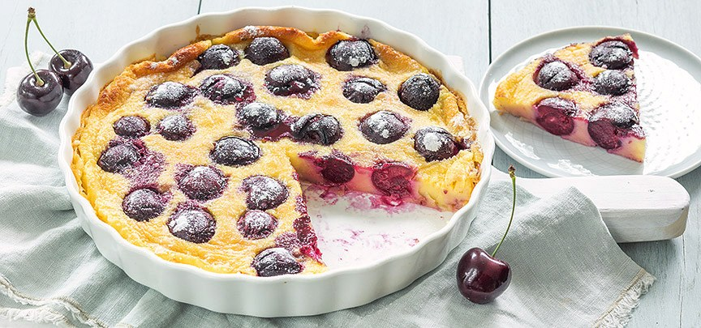

Clafoutis met kersen
Frans nagerecht van kersen in een lekker gebakken roommengsel uit de oven, serveer de clafoutis lauwwarm met wat poedersuiker
Ingrediënten
- 400 gr verse kersen kersen uit pot
- 50 gr suiker
- 1 zakje vanillesuiker
- Snuf zout
- 250 ml melk
- 75 gr bloem
- 3 eieren
- 25 gr gesmolten boter + om in te vetten
- Poedersuiker om te bestrooien
Benodigdheden
- Bakvorm van 26 tot 28 cm
- mixer
Bereidingswijze
- Verwarm de oven op 190 graden. Zeef de bloem in een kom. Voeg de suiker, vanillesuiker en zout toe en meng door elkaar.
- Voeg de eieren en 25 gr gesmolten boter en mix kort door elkaar. Voeg dan de melk in 2 of 3 keer toe en mix ondertussen door elkaar tot er geen klontjes meer zijn.
- Vet de vorm goed in en verdeel de kersen over de bodem (pitten verwijderen hoeft niet, maar mag natuurlijk wel). Als je kersen uit pot gebruikt, laat deze dan heel goed uitlekken. Giet het beslag over de kersen in de vorm.
- Bak de clafoutis ca. 30 minuten in de oven tot hij gaar is. Haal uit de oven en laat wat afkoelen en bestrooi met poedersuiker.
